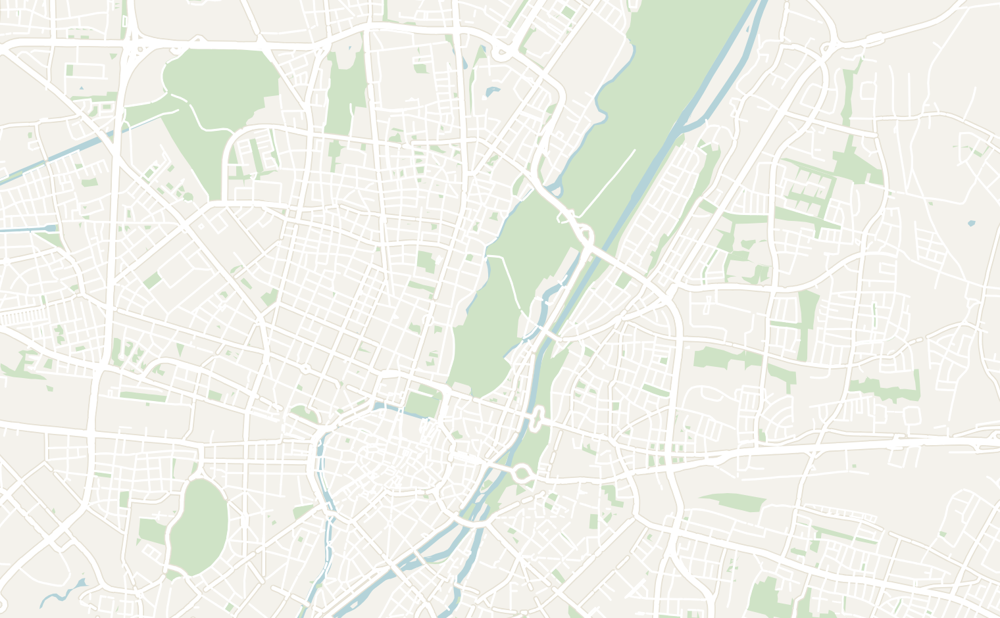
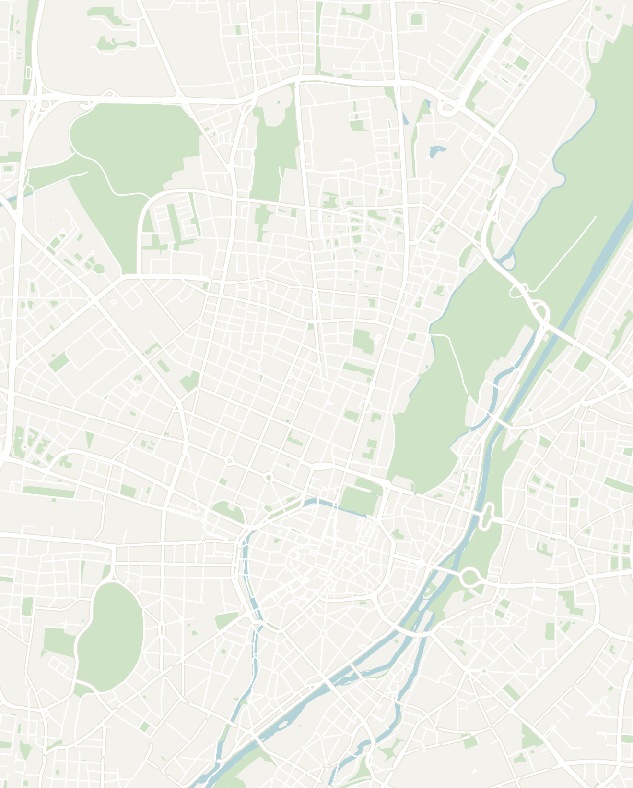

General
Germany is a country where regional differences are more noticeable than you might expect: Bavaria in the South feels distinctly different from Berlin, Hamburg, or the Rhineland, with its own traditions, food, architecture, and festivals. I've visited roughly four times, although several trips were either brief or quite a while ago, so these notes focus primarily on my most recent visit to Munich and Oktoberfest.
Munich is a large city in southern Germany's Bavaria province with plenty to see year-round, but for two weeks every September and October it becomes the center of the world's attention as millions of visitors descend for Oktoberfest. You'll often hear Germans recommend smaller regional Volksfests instead, which can be cheaper and feel more local like Stuttgart's Cannstatter Volksfest. However, I went into Oktoberfest expecting an overhyped tourist spectacle and ended up having an absolute blast. It's worth experiencing at least once.
I spent five days at Oktoberfest, which was way too much. I'd recommend around 2 days at the festival, followed by another 2–3 days exploring Munich and the surrounding Bavarian countryside. That gives you enough time to experience the chaos without letting the festival completely take over your trip.
- Getting around
- Trains — German rail deserves its reputation. The ICE high-speed network links every major city, and from Munich you can be in Salzburg, Nuremberg or Garmisch in around two hours, which makes day trips into Bavaria easy
- Flights — Munich Airport is well connected to the rest of Europe with budget carriers offering flights for less than 50 Euros. One thing to plan for: the airport sits well outside the city, so the S-Bahn into the center takes about 45 minutes
- Getting around Munich — the U-Bahn and S-Bahn lines cover everything you need and run late into the night, which matters during Oktoberfest. The festival grounds have their own stop, and the trains back into town at the end of the night are absolutely rammed. Munich is also flat and very walkable, so I ended up on foot more than underground
- Money — as a member of the EU, the Euro is the official currency of Germany. Germany is mid-priced for Western Europe. Munich outside of festival season is reasonable, but Oktoberfest is its own economy where everything is marked up
- For Oktoberfest specifically, a Maß (the one-liter stein of beer) runs about €15 before you have tipped, food inside the tents is roughly €17–€30 for a typical meal, and the lederhosen I bought from a shop outside the center cost €120, which I was told was a fair price
- Food — the food in Munich is Bavarian and unapologetically heavy. Munich is a very international city and you'll find a variety of international food options around the city. I had really good Asian and Turkish food there when I wanted to take a break from German food. Here are some local Bavarian dishes that are worth trying when you're in Munich:
- Weißwurst is the one to try first: a white veal sausage served floating in its own broth, traditionally eaten before noon and never with the skin on
- Beyond that it is pretzels the size of your head, schnitzel, roast pork with dumplings, and currywurst and bratwurst from street stands. The beer gardens are the real institution though, and an afternoon at a big one like Augustiner Keller is worth a visit
- Language — unsurprisingly, they speak German in Germany. English is common in Munich and you will get by fine pretty much in the entire country. Learn danke, bitte and ein Maß bitte and you will get a warmer reception
- When to go — despite it's name, Oktoberfest is mainly in September! It actually runs from mid or late September into the first weekend of October
- The festival has special ceremonies on the first and last few days which are completely worth planning your trip around. Every year, Oktoberfest opens on a Saturday when the mayor taps the first keg at noon in the Schottenhamel tent, and the costume parade is the next morning
- Both are worth planning around, though we managed to miss the parade entirely by getting comfortable at a table and losing track of time.
- Outside the festival, late spring and summer are the best months to visit Munich for the beer gardens and the English Garden
Munich
2–3 days recommendedMunich is Bavaria's bustling capital, where grand architecture, traditional beer halls and sprawling parks give the city a distinctly southern German character. The historic center is compact and easy to explore on foot, centered around the imposing Marienplatz and its surrounding churches, palaces and old streets.
Outside the center, the city has a more modern side, from the enormous English Garden and its famous river surfers to some of Germany's best museums and galleries. Munich also makes an excellent base for exploring Bavaria, with the Alps, lakes, castles and smaller towns all within easy reach. I've actually visited Munich a couple times: once as a kid and more recently for Oktoberfest. I'd recommend spending 3 to 5 days here with 2 days dedicated to Oktoberfest if you're visiting around that time.
- Marienplatz — the main square and heart of the old town. It is a great place to begin your journey in Munich with a plethora of historic buildings and busy shopping streets
- Neues Rathaus (New Town Hall) — the enormous neo-Gothic building dominating Marienplatz. At 11am everyday, people gather for the Glockenspiel show, where life-size figures come out of the mechanical clock and start dancing. I didn't find the show to be particularly impressive compared to other mechanical clocks that I'd seen in Switzerland. You can also tour the building, but there wasn't much inside either
- St. Peter's Church & Tower — Munich's oldest parish church with a really tower overlooking the city. It is 306 steps up to the top of the tower (with no elevator), but it is well worth the climb since it opens onto the best view in the city: straight down onto Marienplatz and the Neues Rathaus, and on a clear day all the way to the Alps
- Viktualienmarkt — the daily food market just off Marienplatz that has been running since 1807. Explore the various stalls selling cheese, sausage, bread, spices and produce around a painted maypole. The real draw is the beer garden in the middle of it, which is shaded, central and open to anyone, and is where I ended up over curry sausage and a beer on my last night in the city
- Asamkirche — a tiny, avantgarde Baroque church wedged between shopfronts on a busy street. The entrance is so narrow you can walk past the door without noticing it. The Asam brothers built it as their own private chapel and every surface inside is gilded, painted or carved. It is definitely worth a stop since it is free and is very quick to explore
- Munich Residence — the Wittelsbach family's city palace and the largest in Germany, a sprawl of ten courtyards and 130 rooms right in the center. The Antiquarium is a barrel-vaulted Renaissance hall covered in frescoes which is the single most impressive room in the city, and the treasury next door is worth the combined ticket
- English Garden — one of the largest urban parks in the world (bigger than New York's Central Park) and a green space locals will frequent during the summer. Here you'll find beer gardens under the trees, green fields for sunbathing, and long paths along the streams.
- Don't miss the Eisbach, a standing wave on a river channel by the south entrance where wetsuited surfers queue up and ride right in the middle of the city, year-round. It's mesmerizing to watch even if you never get in the water
- Take a swim in the Isar River — if you're up for a bit of a cold swim, hop into the Isar River that flows right through the English Garden. It is a fast, cold alpine river so be prepared to for the cold temperatures and to fly down the river. It is a popular activity among locals. Even just walking or cycling the leafy banks is a lovely way to spend an afternoon if you don't want to hop into freezing water
- Odeonsplatz & Karlsplatz — two grand open squares respectively at the north and west end of the old town. They're connected to the pedestrian shopping streets that run straight through to Marienplatz so you'll probably walk by and it is worth taking a minute to admire these squares
- Augustiner Biergarten — the classic Munich beer garden and the one I would send anyone to: enormous, shaded by chestnut trees and seating a few thousand people without ever feeling crowded. We took over three tables here with people from the hostel and stayed all afternoon into the evening. In the self-service section, you are allowed to bring your own food and just buy the beer, which is a bonus
- Hofbräuhaus München — the 16th-century state beer hall and the most famous drinking room in the world, complete with vaulted ceilings, an oompah band and liter steins carried six at a time. It is thoroughly touristy and locals will tell you so, but I still really enjoyed the food here
- Khanittha Im Werksviertel — a genuinely good Thai place out in the Werksviertel. If you're staying in the area and are craving Asian food, this place was amazing. I stayed in the hostel next door and ended up having it twice. A good Thai meal really hit the spot after traveling through Europe for 3 months
- Stay central, in the Altstadt (old town) or near the Hauptbahnhof (main station), for the easiest transit around the city and walkability. If you're planning to go to Oktoberfest, book months ahead and expect prices to double or more. The whole city fills up, and even hostel beds and the campsites out by the fairground go fast
- Wombat's Munich Werksviertel — a big, well-run hostel in the Werksviertel neighborhood. It is a the converted industrial quarter that is now full of bars and street food. It is a little out of the old town, but you can easily get to Altstadt (old town) by train in just 20 minutes. It was a nice hostel, but I would chose something closer to old town if you have the option


Double-tap to open in Google Maps
Oktoberfest
2 days recommendedFor two weeks from late September, the legendary Oktoberfest is celebrated in Munich. It is known world-wide as a massive beer-drinking festival, but originated from a deep Bavarian tradition of celebrating the harvest. Around six million people come through the Theresienwiese (the festival grounds), the whole city puts on Tracht (traditional clothing like the lederhosen and dirndl), and the tents run from mid-morning until late every day.
You do not need a ticket and entry is free. What you need is a table (which means turning up early) and a desire to drink beer! Below are some tips to make sure you'll have an enjoyable time:
-
The grounds — the festival sprawls across the Theresienwiese ("the Wies'n"), an enormous fairground of 14-odd giant beer tents, each run by one of Munich's historic breweries. Each one of the 14 tents is massive, has a different theme and seats thousands. You can also wander around the fairgrounds to enjoy carnival rides, games and food booths. Entry is free, but you pay for the beer and the rides. Every tent has its own distinct crowd and feel, so which one you pick genuinely matters:
- Schottenhamel — the historic tent where the Mayor of Munich taps the very first keg with a shout of "O'zapft is!" to open the festival. It is near-impossible to get into on the opening weekend, but is worth a stop since it is one of the traditional tents
- Augustiner-Bräu — the local favorite and most traditional tent, still serving its beer from old wooden barrels. It draws more Müncheners than tourists and has arguably the warmest atmosphere of the lot. It's popular for exactly that reason. Make sure to arrive before noon to ensure you have a table (especially on the first few days or weekends)
- Hacker-Pschorr — the one for a full-blown party: a great live band that pivots from oompah tunes to pop-song singalongs as the day goes on. There was a very pretty "Bavarian heaven" ceiling when I was there, with a young crowd standing on the benches by mid-afternoon. Less about tradition, more about the atmosphere, and a reliably brilliant time
- Hofbräu — the big international party tent and the most touristy of the bunch, but still a lot of fun. The large outdoor area is often less packed if you can't get a seat inside.
- The Beer — served only in a Maß, a full 1-liter stein. During Oktoberfest, each brewery serves special Oktoberfest beer that is brewed specifically for the festival. The serving size is huge and at around 6% ABV, so one or two land harder than you expect! You're typically at Oktoberfest for a whole 8 to 12 hours so eat as you go and pace yourself appropriately. Expect beers to cost €15 each
- Clothing — rent a Dirndl or Lederhosen! It was really fun to dress up (even if you think you look silly at first. Almost everyone dresses up and you'll feel out of place in regular clothes. I bought a lederhosen for €120, which I was told was a fair price
- Rides & recovery — it's a full-blown fairground as much as a beer festival, with old-school carnival rides, a big wheel and haunted houses (the chain swing ride out over the city lights after dark is the one to do). Be wary of the grassy slope outside the tents, affectionately known by locals as "Vomit Hill," is the local institution for people who get way to drunk to lie down and sleep it off in the afternoon sun
- Currywurst — sliced grilled sausage drowned in a tangy curry-spiced tomato sauce and dusted with more curry powder, usually served with fries or a bread roll. A popular German street-food sold at Imbiss (snack stands) all over the city
- Bratwurst — the grilled pork sausage that's everywhere. There are many different varieties sold at the food stalls. The skinny Nürnberger-style ones from the Oktoberfest grills, tucked into a crusty roll with a smear of sweet mustard was incredible
- Steak Onion Sandwich — the late-night Oktoberfest staple: a griddled steak roll piled with fried onions from the stands outside the tents. It was an amazing snack when the beer halls empty out and you're on your way home
Other Places to Consider
These notes focus on Munich and Bavaria, but Germany is a huge country with plenty more to explore. I've been to some of these places (Berlin, Cologne & Frankfurt) briefly and would love to comeback for another visit:
- Berlin — the edgy, endlessly layered capital and a total contrast to buttoned-up Munich. It's soaked in 20th-century history (surviving stretches of the Berlin Wall and the East Side Gallery, the Brandenburg Gate, the sobering Holocaust Memorial, Checkpoint Charlie), stacked with world-class collections on Museum Island, and home to some of the most legendary nightlife on earth. Give it several days of its own
- Neuschwanstein Castle — the white hilltop castle built by "Mad" King Ludwig II that inspired the Disney logo, set against the Bavarian Alps about two hours south of Munich. It's a very doable day trip from Munich: book timed-entry tickets well ahead, and walk up to the Marienbrücke bridge for the classic view of the castle floating above the forests and lakes
- The Rhine Valley — the dramatic stretch of the Rhine between Koblenz and Rüdesheim (roughly between Cologne and Frankfurt), where terraced vineyards and dozens of medieval castles crowd the steep hills above the river. It's a beautiful landscape best seen slowly from the deck of a river cruise, hopping off at wine villages like Bacharach or below the legendary Lorelei rock
- Hamburg — Germany's maritime city in the north, built around one of Europe's biggest ports and threaded with canals (it has more bridges than Venice and Amsterdam combined). The wave-roofed Elbphilharmonie concert hall is the modern landmark, the red-brick Speicherstadt warehouse district is a highlight, and the Reeperbahn in St. Pauli is the famously rowdy nightlife strip
- Cologne (Köln) — a laid-back Rhineland city whose reason to visit towers over everything: the vast, soot-blackened Gothic Kölner Dom cathedral, which rises straight up beside the main station the moment you step out. The old town itself is small, a few squares of colorful gabled houses, but the riverside is lovely: walk out onto the Hohenzollern Bridge, blanketed in thousands of love locks, for a gorgeous view back over the cathedral and the Rhine. I enjoyed my visit in 2023, but wouldn't recommend going out of your way to visit Cologne
- Frankfurt — Germany's banking capital and the site of its busiest airport, so there's a fair chance you'll pass through. It's smaller than I expected and was completely flattened in WWII. There is a nice rebuilt town center
- The real reason to linger is the food: cross the river to the Sachsenhausen district. I had a wonderful meal at Daheim im Lorsbacher Thal, approved by my local German friend. It is a traditional German restaurant specializing in local Apfelwein (a dry, tart cider) and the local Grüne Soße, a cold sauce of seven fresh herbs, usually served with schnitzel. It was a solid way to spend a long layover, but I also wouldn't go out of your way to visit Frankfurt